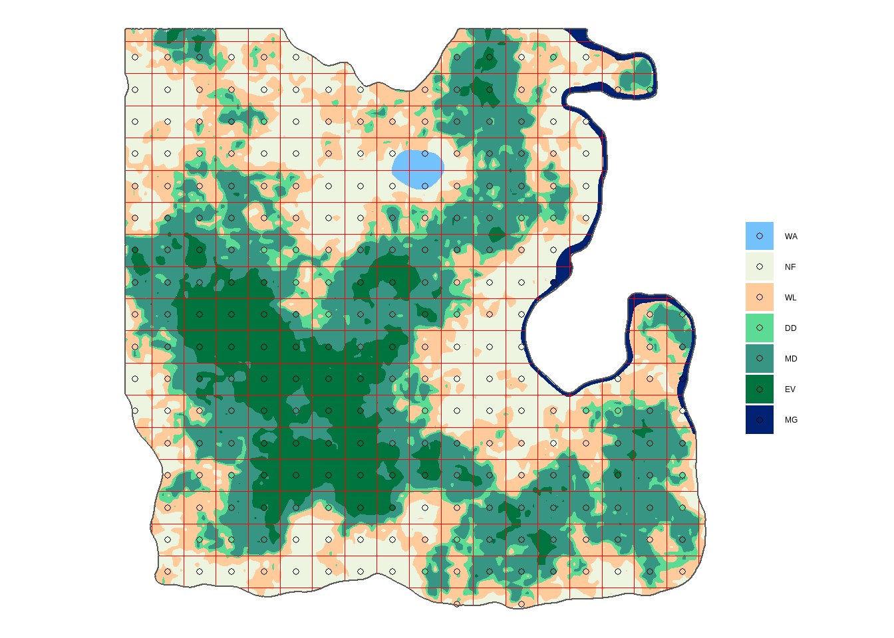

2 Systematic sampling
Now let’s see what sampling grid spacing is the closest to a sampling size of 281 plots, the number of plots selected with our budget constraint. We will start with
Grid spacing
To calculate the grid spacing that corresponds to our sampling size, we must first divide forest area by sampling size to obtain an estimate of the area that each sample point represents. For a square grid, the square root of this division gives the grid spacing. For example, for a 1,000 ha forest and a sampling size of 20 plots, the grid size will be:
\[d = \sqrt{\frac{1000 ha}{20}} = \sqrt{50ha} = \sqrt{500000m^2} \approx 707.1m\]
In our case, we can calculate the forest area of Louland from the table, area_lc, calculated in Lesson 1. We need to (1) filter forested land cover classes with the function filter(), (2) extract their area with the function pull() and (3) sum their area.
Your turn! Use the console below to create the object, area_forest, which contains the total forest area.
Remember that our land cover classes are coded EV, MD, DD, MG, WL, NF and WA for Evergreen, Mixed Deciduous, Deciduous and Mangrove Forests, Woodland, Non-Forest and Water respectively.
## Console
#### Tips
## First run `area_lc` in the console to see what land cover classes are represented and which codes need to be filtered## Tips
area_forest <- area_lc %>%
filter(lc %in% c(___)) %>%
pull(___) %>%
sum()
area_forest## Solution
area_forest <- area_lc %>%
filter(lc %in% c("EV", "MD", "DD", "MG", "WL")) %>%
pull(area_ha) %>%
sum()
area_forest502340.1 [ha]
Then we need to convert the forest area from hectares to square km:
area_forest_km2 <- as.numeric(set_units(area_forest, value = km2))
area_forest_km2 [1] 5023.401Finally, we can apply the grid spacing formula with the square root function sqrt(), and the sampling size for a 10% precision, n10. Complete the following code sequence to calculate the grid spacing.
## Console
grid_spacing <- round(sqrt(___ / ___), 3)
grid_spacing## Solution
grid_spacing <- round(sqrt(area_forest_km2 / n10), 3)
grid_spacing[1] 4.228The result is a grid spacing slightly larger than 4km. We must note here that the number of plots falling on forest land might differ from this hypothetical value, depending on the forest distribution. We need to create the grid and calculate how many plots are located on forest land in order to cross check that the grid spacing fits our desired cost/precision sampling size. Even after this confirmation, there can be mapping errors and several plots confirmed to be located on forest land that may not be actually forested.
To help you become familiar with the R code, we will demonstrate the sequence of commands to create the grid, map it and calculate the number of plots per land cover class on a 5 x 5 km grid and we will let you develop the 4 x 4 km grid through guided exercises.
Create grid points
The sf package contains the function st_make_grid() to create grids, and aligned or unaligned grid points within grid polygons. We have the sf_admin shapefile that contains the administrative boundary of Louland and can be used as a canvas for the grid.
We have two sf objects in the preliminary data: sf_admin, the administrative boundaries of Louland and sf_lc the land cover shapefile data of Louland. In the console below you can run the object names to see their basic information.
## Console
##
By default, the grid starting point is the land most Southern and Western point. Systematic sampling designs are considered to be random samples of size one as only the starting point of their grid is chosen randomly. To get a random starting point so, we will chose randomly an integer value between 500 meters and 2 km. We start at 500m to avoid having too many plots at the edge of the land. This is a precaution specific for this exercise, as Louland’s shape is close to a square. This precaution may not be needed in a real country! The offset is calculated based on the land cover shapefile bounding box calculated with st_bbox().
set.seed(10)
random_x <- sample(500:2000, size = 1)
random_y <- sample(500:2000, size = 1)
offset <- st_bbox(sf_lc)[c("xmin", "ymin")] + c(-random_x, -random_y)
How to create grids
To create a 5 x 5 km grid, we will fill the input cellsize with c(5000, 5000) as the unit is meters, and to make the grid we use the option what = "polygon".
sf_grid5 <- st_make_grid(sf_lc, cellsize = c(5000, 5000), what = "polygons", offset = offset) %>%
st_intersection(sf_admin) %>%
st_as_sf()
Your turn! Adapt the above code to create sf_grid4, the 4 x 4 km grid.
## Console
sf_grid4 <- st_make_grid(sf_lc, cellsize = c(___, ___), what = ___, offset = ___) %>%
st_intersection(sf_admin) %>%
st_as_sf()## Solution
sf_grid4 <- st_make_grid(sf_lc, cellsize = c(4000, 4000), what = "polygons", offset = offset) %>%
st_intersection(sf_admin) %>%
st_as_sf()
How to create aligned sampling points
To create the points, we change the option to what = "center" (replace "center" with "corner" to locate the points at the grid intersections). At this stage, we can also use the function st_intersection() to reduce the grid to our ‘country’ boundaries and the function st_as_sf() converts the result of the intersection to an sf object.
sf_points5 <- st_make_grid(sf_lc, cellsize = c(5000, 5000), what = "centers", offset = offset) %>%
st_intersection(sf_admin) %>%
st_as_sf()
Your turn! Prepare sf_point4, the points’ location on the 4 x 4 k grid.
## Console
#### Tips
sf_points4 <- st_make_grid(sf_lc, cellsize = c(___, ___), what = ___, offset = ___) %>%
st_intersection(___) %>%
st_as_sf()## Solution
sf_points4 <- st_make_grid(sf_lc, cellsize = c(4000, 4000), what = "centers", offset = offset) %>%
st_intersection(sf_admin) %>%
st_as_sf()
We can finally overlap the grid points with the land cover layer, using the function st_join(), to assign land cover to each plot. We aim for our land cover code lc to appear in a certain order in the map. To follow the order of the land cover numerical ID lc_id, we use the function fct_reorder() from the tidyverse package forcats. This function converts a text variable into an ordered factor following an other variable (in our case lc_id).
sf_plot5 <- sf_points5 %>%
st_join(sf_lc) %>%
mutate(lc = fct_reorder(lc, lc_id)) %>%
filter(!is.na(lc))
Your turn! Adapt the above code to prepare sf_plot4, joining the points location and the land cover class spatial data.
## Console
#### Tips
sf_plot4 <- ___ %>%
st_join(___) %>%
mutate(lc = fct_reorder(___, ___)) %>%
filter(___)## Solution
sf_plot4 <- sf_points4 %>%
st_join(sf_lc) %>%
mutate(lc = fct_reorder(lc, lc_id)) %>%
filter(!is.na(lc))
Visualize
We can visualize the grid with the following code based on the ggplot2 package and its geom_sf() function to display sf objects.
We have a custom color palette pal for Louland land covers. We can see this color palette with the function show_col(), from the scales package
pal <- c("#73c2fb", "#edf5e1", "#ffcb9a", "#5cdb95", "#379683", "#00743f", "#012172")
library(scales)
show_col(pal)
Here is the code to make the map with the 5 x 5 km systematic sampling design.
ggplot() +
geom_sf(data = sf_lc, aes(fill = lc), color = NA) +
geom_sf(data = sf_plot5, aes(fill = lc), shape = 21) +
geom_sf(data = sf_grid5, fill = NA, col = "red", size = 0.1) +
geom_sf(data = sf_admin, fill= NA) +
scale_fill_manual(values = pal) +
labs(fill = "", color = "") +
theme_void()
It’s looking good! Adapt this code to make the same map with the 4 x 4 km grid.
## Console
## ## Tips
ggplot() +
geom_sf(data = ___, aes(fill = lc), color = NA) +
geom_sf(data = ___, aes(fill = lc), shape = 21) +
geom_sf(data = ___, fill = NA, col = "red", size = 0.1) +
geom_sf(data = ___, fill= NA) +
scale_fill_manual(values = ___) +
labs(fill = "", color = "") +
theme_void()## Solution
ggplot() +
geom_sf(data = sf_lc, aes(fill = lc), color = NA) +
geom_sf(data = sf_plot4, aes(fill = lc), shape = 21) +
geom_sf(data = sf_grid4, fill = NA, col = "red", size = 0.1) +
geom_sf(data = sf_admin, fill= NA) +
scale_fill_manual(values = pal) +
labs(fill = "", color = "") +
theme_void()
Calculate the number of plots per land cover class
To calculate the number of plots in each land cover class, we need to group the plots by land cover with the function group_by(), then count them with the function summarise() (remember lesson 1) and the function n(). The function n() counts the number of rows in a table or in each category of a category variable. As we don’t need the spatial information, we first convert our sf object to a tibble with the function as_tibble().
nplot5 <- sf_plot5 %>%
as_tibble() %>%
group_by(lc) %>%
summarise(n = n())
nplot5 # A tibble: 7 x 2
lc n
<fct> <int>
1 WA 2
2 NF 63
3 WL 62
4 DD 23
5 MD 73
6 EV 40
7 MG 4
Your turn! Calculate the number of plots per land cover class with the 4 x 4 km grid
## Console
#### Tips
nplot4 <- ___ %>%
as_tibble() %>%
___(lc) %>%
___(n = n())
nplot4 ## Solution
nplot4 <- sf_plot4 %>%
as_tibble() %>%
group_by(lc) %>%
summarise(n = n())
nplot4 # A tibble: 7 x 2
lc n
<fct> <int>
1 WA 2
2 NF 101
3 WL 92
4 DD 41
5 MD 123
6 EV 54
7 MG 8
Last step, to get the total number of forest plots, we need to filter out non-forest categories with the function filter() and sum up the remaining number of plots.
nplot5_total <- nplot5 %>%
filter(!(lc %in% c("WA", "NF"))) %>%
summarise(n = sum(n))
nplot5_total# A tibble: 1 x 1
n
<int>
1 202
Your turn! Calculate the total number of forest plots in the 4 x 4 km grid.
## Console
#### Tips
nplot4_total <- ___ %>%
filter(!(lc %in% c("WA", "NF"))) %>%
summarise(___)
nplot4_total## Solution
nplot4_total <- nplot4 %>%
filter(!(lc %in% c("WA", "NF"))) %>%
summarise(n = sum(n))
nplot4_total# A tibble: 1 x 1
n
<int>
1 318
Good job! Looking back at the sampling size given by different precision levels, we had 281 plots for 10% precision and 125 plots for 15% precision. Our budget is enough to measure around 300 plots, so we can afford an expected precision of 10%.
Systematic sampling: Recap
Based on the preliminary inventory, and analysing using R skills, we have now identified a good sampling grid. To recap, the process was:
- We used the preliminary forest inventory results to calculate a hypothetical number of samples required for a desired precision of 5, 10, 15 or 20%.
- Based on our available budget we have identified what precision we can afford and how many plots it requires, i.e. our sampling size.
- We have then created different sampling grids for Louland and estimated how many plots would fall on forest land.
- We have selected the most adequate sampling grid based on our cost/precision trade-off.